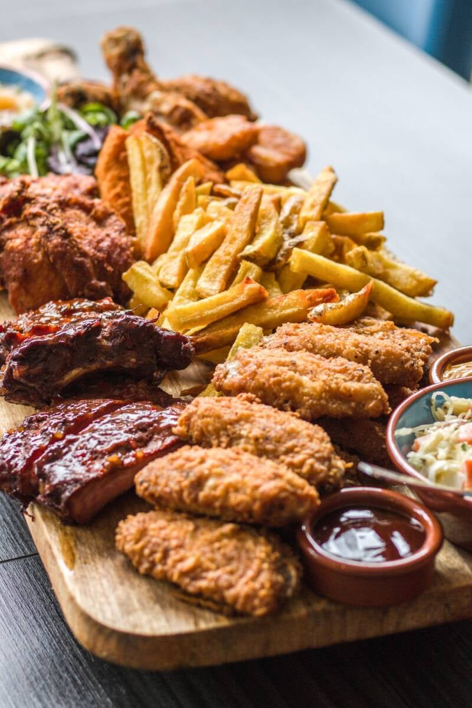
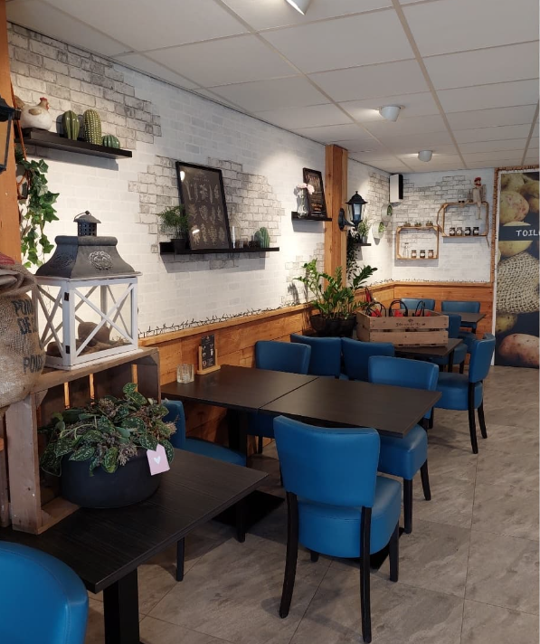
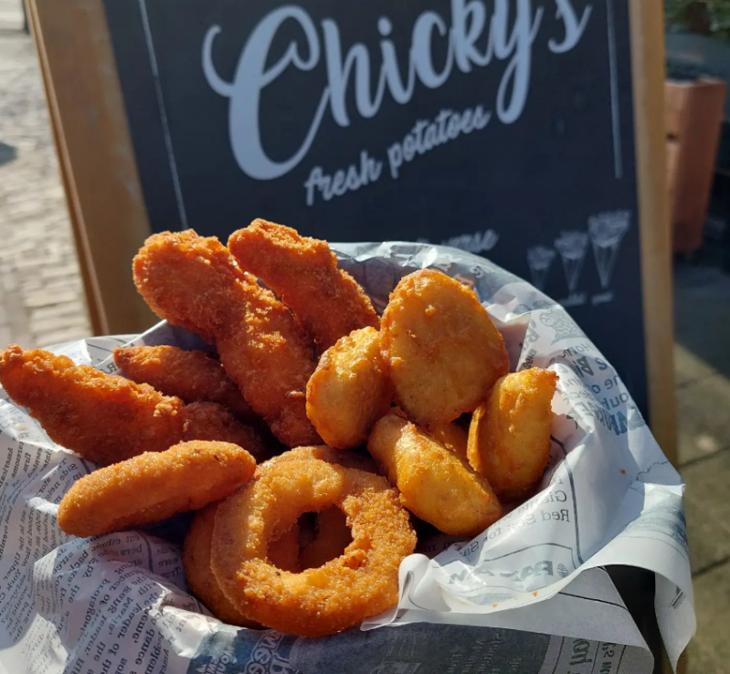

Chicky'sfresh potatoesKiprestaurant in Putten
Diverse soorten kip, huisgemaakte sausjes en verse frites die we zelf met de hand snijden. Eet gezellig bij ons aan de Kerkstraat, haal af, of laat het in Putten bezorgen.
Di t/m vr 17.00 - 20.00 · za 12.30 - 20.00


Een gezellige plek voor vers bereide kip
We zijn een kleinschalig kiprestaurant in Putten en ons doel is om u een onvergetelijke ervaring te geven! Wij hopen voor u een gezellige plek te zijn waar u kunt genieten van onze vers bereide producten.
Wanneer u bij ons in het restaurant eet, hebben we natuurlijk een aanrader: de meter smulplank! Een plank gevuld met verschillende soorten kip, diverse sausjes en natuurlijk onze verse frites. Kortom, van alles wat!
Geen tijd om in het restaurant te eten? U kunt bij ons afhalen en in Putten bezorgen we ook.
Wist u dat...
- wij al 6 jaar op rij als leukste restaurant van Putten zijn uitgeroepen?
- wij zoveel mogelijk producten helemaal zelf maken?
- wij de meeste energie krijgen van feestdagen en evenementen?
- de smulplank het meest bestelde gerecht van onze kaart is?
Verse frites, gewoon met de hand gesneden
Onze verse friet snijden wij van echte Agria-aardappelen en frituren wij in plantaardige olie. De aardappelen worden elke week geleverd in grote zakken en koel en droog bewaard. De friet snijden wij met de hand en bakken wij voor, om ze vervolgens vers af te bakken. Dit zorgt voor de lekkerste verse friet van Putten!
Homemade en vers
Wij proberen al onze producten zelf te maken. Dit zorgt voor diversiteit tijdens het werk en voor de allerbeste kwaliteit. En daar gaan wij voor!
- Friet
- Kipkruiden
- Coleslaw
- Saté
- Satésaus
- Kipburgers
- Mayonaise

Afhalen & bezorgen
Geen tijd (of zin) om te koken? Bestel online en wij bezorgen bij u in Putten. Natuurlijk kunt u ook telefonisch bestellen, voor zowel bezorging als afhalen.
Vraag naar onze avondkaart, hierop vindt u de complete maaltijden.
Nieuw op onze kaart
Smikkelplank
Velen van jullie kennen onze beroemde smulplank wel, maar wij hebben nu ook een nieuwe variatie: de Smikkelplank! Een goed gevulde plank met o.a. chicken wings, crispy haasjes, nuggets, nacho's en piri piri vlees.
Wrap pulled chicken
Een heerlijke wrap met sla, komkommer, gebakken uitjes, BBQ-saus en uiteraard onze zelfgemaakte pulled chicken.
Donut Bites
Heerlijk simpel dessert, of lekker als tussendoortje. Beschikbaar in 2 smaken: appel en speculoos.
Vernieuwde Chicky's Burger
Dezelfde homemade burger, maar nu met een heerlijke brioche bun, tomaat en uitjes!
Kids Snackplankje
Op dit plankje speciaal voor jou vind je 6 verschillende snackjes. Frietjes horen hier natuurlijk ook bij.
Mexican Hotdog
Met 2 soorten kaas, BBQ-saus, guacamole en afgetopt met salted tortilla chips. Alsof je je in Mexico waant.
Smulplank
Heerlijke topper met diverse kipspecialiteiten. Zo hoef je niet te kiezen!
Reacties van gasten
Hebben hier ontzettend lekker gegeten. Porties zijn ruim voldoende. Vriendelijke bediening. Zeker voor herhaling vatbaar!!
Rosalie
Lekker kip eten!
Erik-Jan Bulthuis
Wij zoeken nieuwe collega's!
Wil jij graag ervaring opdoen binnen de horeca en vind je het leuk om mensen naar hun zin te maken? Dan zoeken wij jou! Wij zijn een gezellig en hecht team dat nauw samenwerkt en zoekt naar uitbreiding. Hou jij van aanpakken, dan ben je bij ons van harte welkom. Ervaring in de horeca is niet vereist, we willen je alles leren!
Momenteel zoeken we een enthousiaste medewerker voor in de keuken en iemand voor in de bediening. Of misschien vind jij de combi juist wel erg leuk! Bij ons werken is heel divers: we hebben bediening, bezorging, afwas en allround posities.
Mail je sollicitatieReserveren & contact
Reserveren kan per mail naar info@allyoucankluif.nl of telefonisch via 0341 769 183. Telefonisch zijn we bereikbaar op dinsdag t/m vrijdag vanaf 16.30 uur en op zaterdag vanaf 12.30 uur.
Chicky's Fresh PotatoesKerkstraat 42
3882 BS Putten
Openingstijden
| Dinsdag | 17.00 - 20.00 |
|---|---|
| Woensdag | 17.00 - 20.00 |
| Donderdag | 17.00 - 20.00 |
| Vrijdag | 17.00 - 20.00 |
| Zaterdag | 12.30 - 20.00 |
| Zondag | gesloten |
| Maandag | gesloten |
Voor feesten en partijen maken we graag een uitzondering. Vraag het ons gerust via info@allyoucankluif.nl.